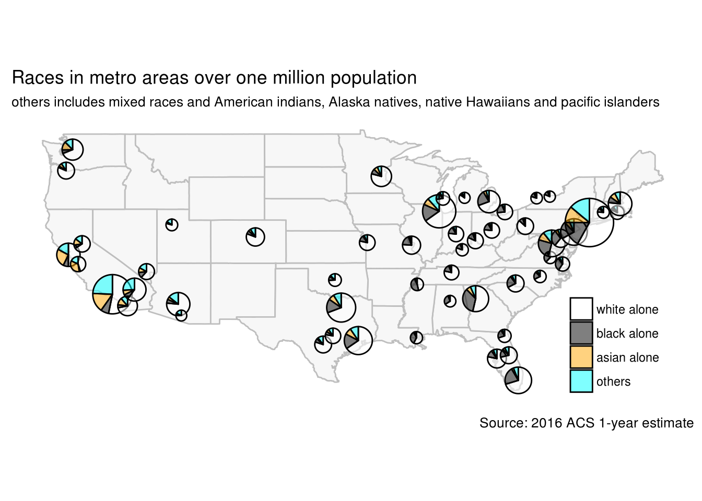

Pie chart has been criticized for being a poor visualization and is not recommended in R community. The popular ggplot2 package discourages the use of pie charts and there is no dedicated geom_pie for it.
Although the criticism is mostly valid, there is a case that pie chart can be useful: pie charts on maps. Pie charting on map is a compact way to show composition by locations.
A recent R package, scatterpie by Guangchuang Yu, specializes in making pie charts at multiple locations. This package is an extension of ggplot2 so it will be easy for ggplot2 users.
We will use scatterpie package to plot the racial composition in largest metropolitan areas in the United state. The demographics data is extracted from 2016 American Community Survey 1-year estimate with totalcensus package.
Let’s first load the required packages.
library(scatterpie)
library(totalcensus)
library(dplyr)Now we extract total population and population of selected races in metro areas from 2016 ACS 1-year estimate. We will only keep metro areas with population over one million.
# read all metro data
metro <- read_acs1year(
year = 2016,
states = "US",
table_contents = c(
"white = C02003_003",
"black = C02003_004",
"asian = C02003_006"
),
geo_headers = "CBSA",
summary_level = "310"
) %>%
.[, others := population - white - black - asian]## Reading US 2016 ACS 1-year survey geography file# keep only largest metro and make some cleaning
largest <- metro[population > 1e6][order(-population)] %>%
# Los Angeles metro changed CBSA from 31100 to 31080, hand correct the coordinate
.[GEOID == "31000US31080", ":=" (area = "Metro: Los Angeles", lon = -118.18194, lat = 34.10939)] %>%
.[, .(NAME, lon, lat, total = population, white, black, asian, others)]
head(largest, 3)## NAME lon lat
## 1: New York-Newark-Jersey City, NY-NJ-PA Metro Area -73.8745 40.77432
## 2: Los Angeles-Long Beach-Anaheim, CA Metro Area -118.1819 34.10939
## 3: Chicago-Naperville-Elgin, IL-IN-WI Metro Area -87.8283 41.82352
## total white black asian others
## 1: 20153634 11704438 3430610 2215765 2802821
## 2: 13310447 7080092 880118 2112197 3238040
## 3: 9512968 6202988 1577873 617341 1114766With the race data, we are ready to make pie plot on a map with package scatterpie.
us <- map_data('state')
ggplot(us, aes(long, lat)) +
geom_map(map=us, aes(map_id=region), fill="grey97", color="grey") +
geom_scatterpie(data = largest,
aes(lon, lat, r = sqrt(total)/2000),
cols = c("white", "black", "asian", "others"),
alpha = 0.5) +
scale_fill_manual(
breaks = c("white", "black", "asian", "others"),
labels = c("white alone", "black alone", "asian alone", "others"),
values = c(
"asian" = "orange",
"white" = "white",
"black" = "black",
"others" = "cyan"
)
) +
#geom_scatterpie_legend(radius = sqrt(largest$population)/2000, x = -120, y = 27)
labs(title = "Races in metro areas over one million population",
subtitle = "others includes mixed races and American indians, Alaska natives, native Hawaiians and pacific islanders",
caption = "Source: 2016 ACS 1-year estimate",
fill = NULL) +
coord_fixed() +
theme_bw() +
theme(
legend.position = c(0.96, 0.02),
legend.justification = c(1, 0),
panel.grid = element_blank(),
panel.border = element_blank(),
axis.title = element_blank(),
axis.text = element_blank(),
axis.ticks = element_blank()
)